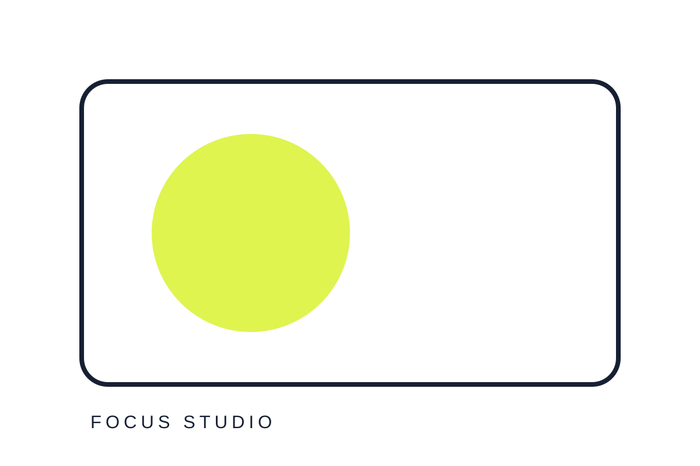

01
Focus Studio
ห้องทำงานเงียบพร้อมโต๊ะตามหลักสรีรศาสตร์และแสงธรรมชาติ
รายการที่คัดสรรให้สะท้อนแนวคิดและมาตรฐานของธุรกิจ

ห้องทำงานเงียบพร้อมโต๊ะตามหลักสรีรศาสตร์และแสงธรรมชาติ

พื้นที่ประชุมและกิจกรรมสำหรับทีม ชุมชน และเวิร์กช็อป